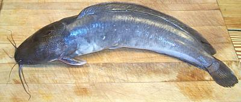
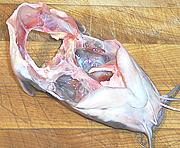

Walking Catfish

[Clarias batrachus (Southeast Asian), also C. gareipinus
(North African) and hybrids of the two]
This air breathing catfish quickly becomes a pest in subtropical
regions, especially since it can travel fairly long distances over land
from one body of water to another. Brought to Florida for fish farming,
it escaped and is now notorious for invading fish farms and eating all
the fish.
Native to Southeast Asia, the walking catfish can grow to over 18
inches and over 2-1/2 pounds but the photo specimen was 17 inches and
1-1/2 pounds. Hybrids with the North African variety can be much larger,
and that variety itself can grow to 120 pounds.
More on Catfish.

The flesh of the Walking Catfish is darker than that of other commercial
catfish but not markedly different in flavor. The flesh remains firm and
does not flake apart with moderate cooking so it's a good fish for soups
and stews.
Buying:
This catfish can be found in many Philippine and
East Asian fish markets. It is easily recognizable by it's almost full
length dorsal fin. It is often labeled "Yellow Catfish", but that's
properly a completely different fish, the
Flathead Catfish.
Prep & Cooking:
This fish works pretty
much like any other catfish. The bones are large and easily avoided so it
can be filleted easily or you can just cut the fish into segments and
toss them into a soup as is done in many ethnic restaurants. The head is
solid bone and to remove the gills (and rudimentary lungs) you have to
use kitchen shears to snip under the front of the jaw, then hinge the
bottom back as shown.
Yield:
The 1-1/2 pound fish in the photo yielded 13 oz of
skin-on fillet (54%) and 11 ounces skinned (46%).
Stock:
The head and bones make a light fish stock of typical
catfish flavor - liked by some and disliked by others. See
Method.
For further details on prep and cooking see
Channel Catfish.
sf_catabz* 090518 - www.clovegarden.com
©Andrew Grygus - agryg@clovegaden.com - Photos on this
page not otherwise credited are © cg1 -
Linking to and non-commercial use of this page permitted